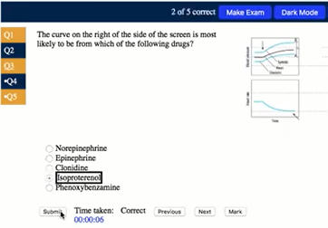

- Published: Comparing Pazopanib, Sunitinib, Cabozantinib, Axitinib-Pembrolizumab, and Ipilimumab- Nivolumab Therapy For Metastatic Renal Cancer, [Paper] -
- Published: First-line TKI vs IO for Metastatic Renal Cell Carcinoma: IMDC Score Stratified Retrospective Analysis, [Paper] -
- Published: ATV-Related Trauma in the Pediatric Population , [Paper] -
- Submitted: Accelerated atherosclerosis and increased cardiovascular disease risk in immune checkpoint inhibitor use, [Paper abstract section]
- Submitted: Impact of upfront cytoreductive nephrectomy on overall survival in metastatic renal cell carcinoma patients treated with first-line immunotherapy: a real-world data analysis, [Paper abstract section]
- Draft: Clinical implications of 18 FES PET/CT in ER positive breast cancer: a retrospective analysis of institutional use, staging treatment decisions and diagnostic performance, [Paper abstract section] -
- Accepted: Clinical implications of 18 FES PET/CT in ER positive breast cancer: a retrospective analysis of institutional use, staging treatment decisions and diagnostic performance, [Abstract] -
- Published: Comparison of loop diuretics in patients with acute myeloid leukemia and differentiation syndrome, [Abstract] -
- Published: The predictive role of mammographic breast calcifications in cardiovascular disease among women undergoing breast cancer screening: Insights from a retrospective database analysis of breast cancer screening, [Abstract] -
- Published: Efficacy and safety of selpercatinib in advanced RET-altered thyroid cancers: A meta-analysis and systematic review performance, [Abstract] -
- Published: Comparative efficacy and safety of pulse field ablation vs. cryoablation and radiofrequency ablation in the treatment of atrial fibrillation: a systematic review and meta-analysis , [Abstract] -
- Published: Retrospective cohort study of venous thromboembolism recurrence by warfarin or direct oral anticoagulant use in pediatric patients with factor V Leiden deficiency use, [Abstract] -
- Published: Tranexamic acid for trauma care: an updated meta-analysis of mortality and thromboembolic events in severely injured patients, [Abstract] -
- Published: S835 Acute gastrointestinal bleed following coronary artery bypass grafting with atrial fibrillation on antiplatelet and anticoagulant, [Abstract] -
- Submitted: Comparing risk of chronic kidney disease in patient with sickle cell disease by SGLT-2 use, Radiological Society of North America, Cutting Edge Research Oral Presentation [Abstract]
- Submitted: Et tu, Bruton? Head-to-head comparison of the mortality rates and side effects of 3 bruton tyrosine kinase inhibitors in treatment of chronic lymphocytic leukemia, Radiological Society of North America, Cutting Edge Research Oral Presentation [Abstract]
Projects

Projects

Hobbies


2023
CPU-PCGCN: Efficient Processing of Convolutional Graph Networks on CPU Architectures
19th International Summer School on Advanced Computer Architecture and Compilation for High-performance Embedded Systems, Fiuggi (Italy), July 2023.
@article{2023cpupcgcn,
author = {Meseguer-Iborra, Nicolas and Abellán, José L. and Acacio, Manuel E.},
year = {2023},
month = {July},
title = {CPU-PCGCN: Efficient Processing of Convolutional Graph Networks on CPU Architectures},
journal = {Advanced Computer Architecture and Compilation for High-performance Embedded Systems},
volume = {19},
pages = {5--8},
isbn = {978-90-7842-704-9}
}
2022
CPU-PCGCN: Procesamiento Eficiente de Redes Convolucionales de Grafos en Arquitecturas CPU
XXXII Jornadas de Paralelismo, Alicante (Spain), September 2022.
@article{2022cpupcgcn,
author = {Meseguer-Iborra, Nicolas and Muñoz-Martínez, Francisco and Abellán, José L. and Acacio, Manuel E.},
year = {2022},
month = {June},
title = {CPU-PCGCN: Procesamiento Eficiente de Redes Convolucionales de Grafos en Arquitecturas CPU},
journal = {Avances en Arquitectura y Tecnología de Computadores},
volume = {32},
pages = {445--453},
isbn = {978-84-1302-185-0}
}
2021
Evaluación de un Sistema de Recomendación en un Acelerador Híbrido
XXXI Jornadas de Paralelismo, Málaga (Spain), September 2021.
@article{2021dlrm,
author = {Meseguer-Iborra, Nicolas and Muñoz-Martínez, Francisco and Acacio, Manuel E. and Abellán, José L.},
year = {2021},
month = {June},
title = {Evaluación de un Sistema de Recomendación en un Acelerador Híbrido},
journal = {Avances en Arquitectura y Tecnología de Computadores},
volume = {31},
pages = {107--115},
isbn = {978-84-09-32487-3}
}
https://nicolasmeseguer.notion.site/StreaMemory-Benchmark-35739f7f69404274a1d287f6827ef203
⛲ StreaMemory Benchmark
25 min
11 feb. 2022
https://nicolasmeseguer.notion.site/Elementwise-2D-546f8fe9a8a24852a234bdc28b00cd15
🧊 Elementwise 2D Tensor
10 min
12 dec. 2022
https://nicolasmeseguer.notion.site/Tracing-LDS-Unit-69210a9d8fe44b4a997f8391aa508621
🛤️ Tracing LDS Unit
20 min
30 nov. 2022
https://nicolasmeseguer.notion.site/DAISEN-Tutorial-9d041575a9b0489099086152fd9a927e
📊 DAISEN Tutorial
15 min
15 nov. 2022
🌲
🌍
🌲
🌍
🌲
🌍